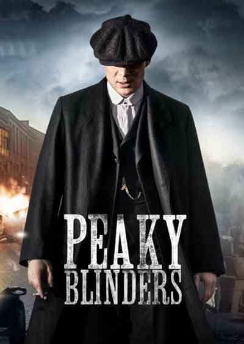
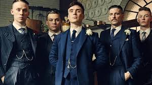
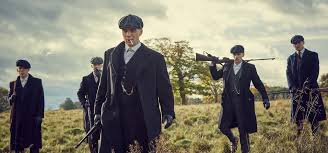
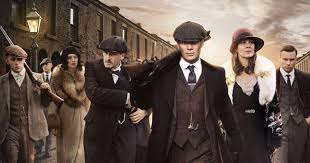
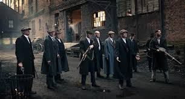

Мій улюблений серіал

Рік:2013-2019
Країна: Велика Британія
Жанр: Драма, Кримінал
Режисер: Стівен Найт
Актори: Кілліан Мерфі, Том Гарді, Аннабелль Волліс, Сем Нілл,Хелен Маккрорі,Джо Коул, Пол Андерсон
Тривалість: 55-60 хв. (24 серії)
Вікові обмеження: 14+
Фото



